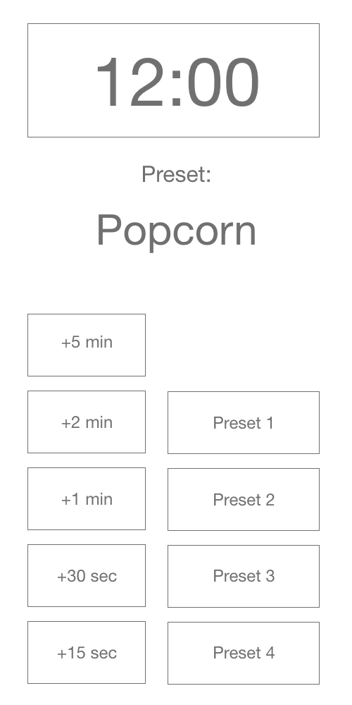

HCI Microwave
by Ynigo Reyes
Link to Project Youtube Presentation
Common/Uncommon uses for a microwave
- Heating up leftover food
- Arts and Crafts
- Defrosting
- Heating up frozen/ready-to-eat meals
User interaction
- Put food into microwave
- Close microwave door
- Either chose a time or preset
- Microwave will automatically turn on as soon as a button is pressed
- Wait for time to run out or add more time
- Microwave will shut off when door is opened
Microwave Feedback
- Will beep when food is ready
- Safety precautions like automatic power on and off when closed and open
Using Old Microwave

Low Fidelity Screenshot

Final Design

Common mistakes with current microwave design
- Buttons are all over the place/not in a easy to read format
- Clock is too small
- No metal detector in microwave (not kid friendly)
- Hard to tell what is going on from a far
How I solved these issues
- Screen turns green when the microwave is on, that way we know it is on even when we have headphones on
- I removed the stop/start button because that is really just one more button to press
- increased the size of the clock to make sure you can see it from afar
- Reorganized the buttons to be easy on the eyes. Made sure them thicker to make is easier to press
- The preset buttons are bigger so that they would be used more